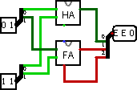

Substituer des librairies
Supposons que nous ayons deux circuits Logisim censés faire la même chose. En tant qu'instructeur, vous avez peut-être demandé aux élèves de terminer une tâche: vous avez un fichier contenant votre solution et vous avez plusieurs fichiers d'élèves contenant leur travail. La tâche consistait à créer un additionneur à deux bits.
J'imagine que nous avons deux fichiers, nommés adder_master.circ et adder_query.circ. Chaque fichier contient un circuit nommé "Adder2" (il est important que le nom du circuit à tester soit exactement le même), dont l'apparence est la suivante.
adder_master.circ adder_query.circ 

Comme vous pouvez le constater, le circuit maître utilise l'additionneur intégré de Logisim, tandis que le circuit de requête utilise un demi-additionneur et un additionneur complet, eux-mêmes composés de portes logiques. Aux fins de notre exemple, le circuit de requête a une erreur stupide: le report du demi-additionneur n'est pas connecté à l'additionneur complet.
Nous construisons notre circuit de test dans un fichier différent. Là, nous chargeons adder-master.circ en tant que bibliothèque Logisim à l'aide du menu → → , et nous insérons son additionneur 2 bits en tant que sous-circuit. Nous pourrions exécuter ce circuit directement pour vérifier que le résultat souhaité correspond à solution parfaite.
java -jar logisim-filename.jar adder-test.circ -tty table
Mais nous voulons exécuter le circuit en utilisant adder-query.circ plutôt que adder-master.circ comme bibliothèque chargée. Une approche naïve serait d'ouvrir Logisim et de charger adder-query.circ à la place de adder-master.circ ou encore vous pouvez simplement supprimer le fichier adder-master.circ et renommer adder-query.circ pour qu'il s'appelle adder-master.circ . Ces deux approches fonctionnent, mais demandent beaucoup de manipulation pour tester les devoirs d'une classe par exemple. Heureusement Logisim inclut une option pratique -sub
qui remplace temporairement un fichier par un autre pendant cette session; sans apporter de modifications sur le disque.
java -jar logisim-filename.jar adder-test.circ -tty table -sub adder-master.circ adder-query.circ
La sortie qui sera générée de cette façon est présentée ci-dessous. Elle il est bien sûr différent de ce que nous avons vu dans la section précédente , car la librairie commune aux circuits adder2 a été remplacée dans le circuit de test par celle de adder-query.circ erroné.
00 00 0E0 01 00 0E1 10 00 EE0 11 00 EE1 00 01 0E1 01 01 0E0 10 01 EE1 11 01 EE0 00 10 EE0 01 10 EE1 10 10 1E0 11 10 1E1 00 11 EE1 01 11 EE0 10 11 1E1 11 11 1E0
Suite: Autres options de vérifications.